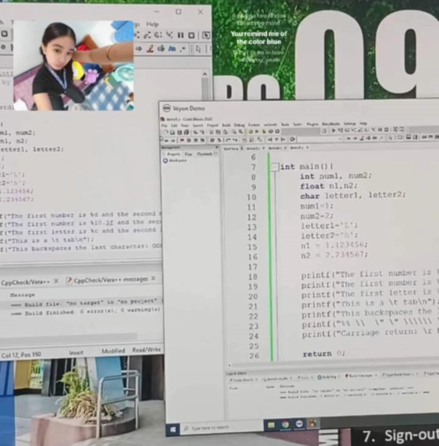
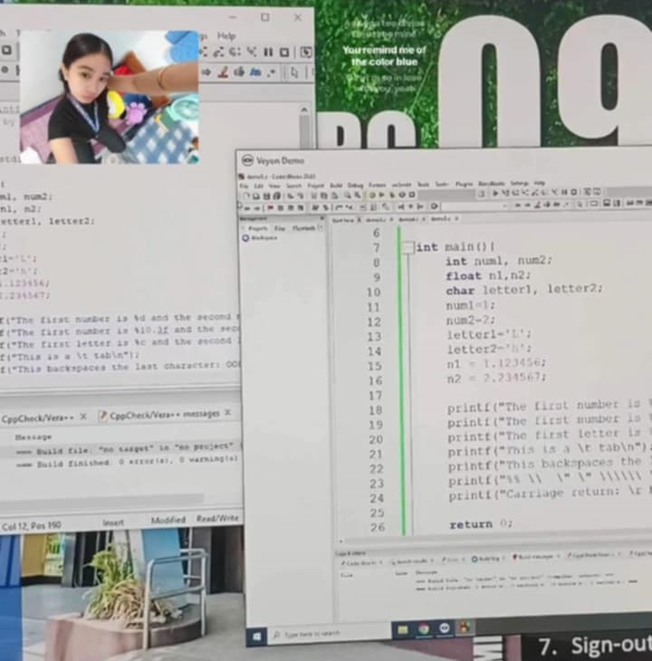

Lesson 1. Technology timeline to computing's impact to industries🐇

In learning the timeline of how computer was created, it got me wondering how they created such revolutionized objects that is still relevant to this age. From human calculators to computers that works like magic.
Lesson 2-3. Information Processing Cycle and Computer system🐋

This lesson taught me that information disseminate utterly the same when information is processed in a human brain. But in computers, data is first viewed by a computer before proceeding in showing the user the information that can be understood by the user. From inputing the data, to processing, and storing it inside to save the information for a subsequent use in future, to sending information to people in a usable format.
Lesson 4. Basic Concept of Computer Security💌

Computer Security should be learned so that people can know when should information be shared or not depending on the information classified. Cybercrime is also taught in this lesson, wherein different online crimes is discussed. It is a common knowledge for students from technology to learn this to avoid misuse of the modern technology and to learn the secure way, countermeasures, of preventing the crimes from happening to you.
Lesson 5. HTML and CSS👻

I learned html tags and saw hell at the same time. Html tags are learned to create a website. From the basics, to styling it using css, and if you want to add animation, you can also add javascript. But first, you need to learn on how you want to create your website the way you want it to be, and that is wireframe. Wireframe is the simplified representations of user-interface or webpage. It focuses on structural layout and functionality rather than visual desiign.
Wireframe Creation

I created a wirefrfame in figma. It was a good experience.
Cross Analysis on Technology Trends

In this output, we had examined trends in ai, cloud computing, and Iot. We then found out that even if the three have distinctive features, they still work together. It broadens career paths and highlights the importance of lifelong learning, increasing interdisciplinary skills.


Activity on cybercrime is my favourite lesson. I had fun doing this activity. Searching information about how the comelec breach became a great issue in the Philippines, and watching youtube videos to know the gaps in each statement released by the comelec head security in protecting the data of each individuals who voted for the election. We got high score on this one.
 

Creating a website is hard.This part is challenging for me. It took me a lot of sleepless nights to get the website perfect of how i want it to be.
Creating a website is hard.This part is challenging for me. It took me a lot of sleepless nights to get the website perfect of how i want it to be. It is satisfying to know that i did done the work, but it is exhausting. Creating a website is not for the weak. I salute each coder. My eyes hurts.